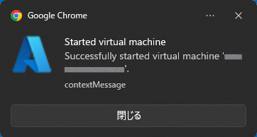

TweakIt for Microsoft Azure
PortalTweakIt for Microsoft Azure
Portal
TweakIt for Microsoft Azure
PortalTweakIt for Microsoft Azure
Portal |
 |
|
| The decoration can be changed by using the User CSS extensions. | |
Default decoration definition (Stylus format).@-moz-document regexp("https:\\/\\/sandbox-\\d+\\.reactblade\\.portal\\.azure.net\\/.*") {
/* for light theme */
.fxs-mode-light {
/* for more than ten resources */
[class^=tweakit-resource-count-] a { color: rgb(255,0,0); }
[class^=tweakit-resource-count-] > div { background-color: rgba(255,0,0,0.1); }
/* for between three and nine resources */
[class^=tweakit-resource-count-00] a { color: rgb(0,127,0); }
[class^=tweakit-resource-count-00] > div { background-color: rgba(0,255,0,0.1); }
/* for one or two resources */
.tweakit-resource-count-002 a,
.tweakit-resource-count-001 a { color: rgb(0,0,255); }
.tweakit-resource-count-002 > div,
.tweakit-resource-count-001 > div { background-color: rgba(0,0,255,0.2); }
/* for no resource */
.tweakit-resource-count-000 a { color: rgb(127,127,127); }
.tweakit-resource-count-000 > div { background-color: rgba(223,223,223,0.7); }
}
/* for dark theme */
.fxs-mode-dark {
/* for more than ten resources */
[class^=tweakit-resource-count-] a { color: rgb(255,127,127); }
[class^=tweakit-resource-count-] > div { background-color: rgba(255,0,0,0.1); }
/* for between three and nine resources */
[class^=tweakit-resource-count-00] a { color: rgb(63,127,63); }
[class^=tweakit-resource-count-00] > div { background-color: rgba(0,255,0,0.1); }
/* for one or two resources */
.tweakit-resource-count-002 a,
.tweakit-resource-count-001 a { color: rgb(127,127,255); }
.tweakit-resource-count-002 > div,
.tweakit-resource-count-001 > div { background-color: rgba(0,0,255,0.2); }
/* for no resource */
.tweakit-resource-count-000 a { color: rgb(127,127,127); }
.tweakit-resource-count-000 > div { background-color: rgba(32,32,32,0.7); }
}
} |
 |
|
|  |
|
|
|
 |
|
|
|